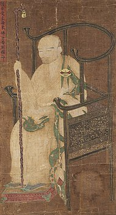
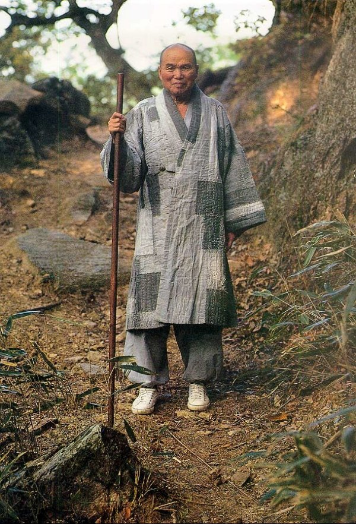
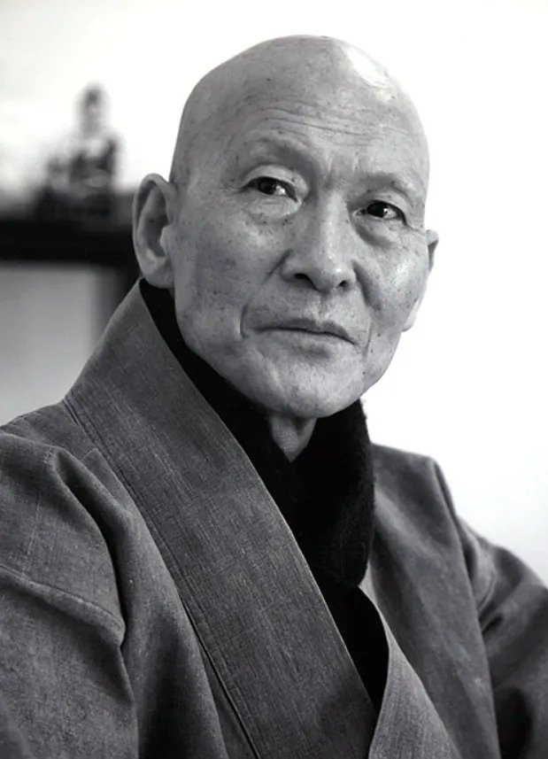

https://www.fmkorea.com/6465165131
'돈오점수'
'돈오'는 단박에 깨닫는 것을 의미하고
'점수'는 지속되는 수행을 말한다.
즉, 한번 깨달은 후에도 그게 끝이 아니라
계속 남아있는 습기를 제거해야 한다는 것이다.

보조국사 지눌(1158~1210)
고려시대 승려인 지눌이 이를 설파한 이후 800여년간
주요 수행방법론중 하나로 전해내려오고 있었다.
그런데 1981년
이 돈오점수에 대해 한 스님이 신랄한 비판을 가한다.
"지눌의 돈오점수설은 오히려 깨달음을 가로막는 장애물이 된다"
"이런 돈오점수를 신봉하는 자들은 전부 이단에 현혹된 자들이다"
"지눌의 주장은 깨달음을 등지는 자살행위이다"
이러한 충격적인 워딩의 주인공은 바로

성철(1912~1993)
당시 조계종 종정(=최고지도자)인 성철스님이었다.
불교계는 충격에 빠진다.
어디 이름없는 승려도 아닌
조계종의 대빵인 성철이 돈오점수를 강하게 부정한 것이다.
더구나 성철은 선정에 통달한 승려, 즉 선사로 인정받고 있었다.
성철의 주장은 이러했다.
깨달음과 닦음은 별개로 진행되는 것이 아니라 동시에 단박에 완성된다는 것이다.
즉, '돈오점수'가 아닌 '돈오돈수'가 맞다는 것이다.
충격은 쉽사리 가시지 않았다.
그와 다른 생각을 하는 승려들도 많았지만
국내 최대종파의 최고지도자이자 선사의 말에 대해
함부로 즉각적인 반론을 제기할 수 없었다.
첫 반격은, 입장이 상대적으로 자유로웠던 학계쪽에서 시작되었다.
1986년
지눌에 관한 연구로 불교학 박사학위를 취득했던 이종익 박사는
"최근 모 선사(성철 스님)가 지눌의 책 첫머리 몇 줄만 보고
망언을 한 것은 그의 식견을 크게 의심하게 만드는 대목이며
비록 선사라 할지라도 편견과 독단에 치우치면
불법에 큰 적이 된다는 점을 반성해야 할 것"
이라며 높은 강도로 성철을 비판한다.
스님들은 숨죽였다.
함부로 나서서 누구 편을 들기엔 폭풍전야와도 같은 긴장의 국면이었다.
물론 다들 할 말은 많았으나
'성철'이라는 이름값 앞에서 쉽게 나설 수가 없었던 것이다.
1987년
드디어 한 스님이 책 서문을 통해 성철의 주장을 반박한다.
"중생계가 끝이 없는데 자기 혼자 돈오돈수로 그친다면
그것은 올바른 수행도 아니고
지혜와 자비를 생명으로 하는 대승보살이 아니다"
"석가모니의 경우도,
보리수 아래서의깨달음은은 '돈오'에 해당하고,
이후 45년간 교화활동으로 무수한 중생을 제도한 일이 바로 '점수'에 해당된다"
라며 돈오점수가 옳음을 주장하고 돈오돈수에 대해서 단호하게 비판한 것이다.
이 스님이 바로

법정(1932~2010)
법정 스님의 서문은 폭풍전야처럼 숨막히던 국면을 어느정도 숨통 트이게 해준다.
성철이라는 거목에 맞서, 반대포지션을 잡아줌으로써
이전보단 자유로운 논쟁의 분위기가 형성된 것이다.
다음해 1988년 학계에서 목정배 교수가 다시 성철스님의 입장을 지원사격하며
깨달음에 대한 논쟁은 혼돈의 상태로 진입하게 된다.
이후 1990년 송광사에서 열린 국제학술대회에서
본격적으로 깨달음에 대한 학자들간 논쟁이 이어지고
여러 스님들도 각자 자신의 주장을 펼쳐오고 있지만
'돈오점수냐 돈오돈수냐'는
지금까지도 결론을 맺지 못하고 있다.
내용참고)
돈오점수인가? 돈오돈수인가? - 법보신문
http://www.beopbo.com/news/articleView.html?idxno=40851
똥 싸다가 아하 모멘트 와서 이해 안되던 게 단박에 이해되는 게 돈오고
그 깨달음을 타인에게 쏙쏙 이해시키기위해 식당 비유법을 고찰하는 게 점수라 생각했는데 ㅋㅋ